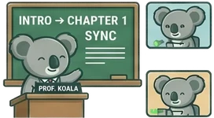
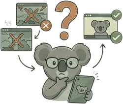
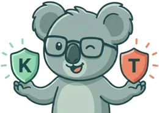
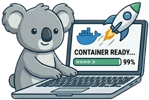

Fonctionne sur presque tous les sites avec un élément vidéo
Parfait pour toutes les occasions
Que ce soit de près ou de loin, KoalaSync rassemble les gens autour de leurs vidéos préférées.
Soirée cinéma entre amis
Synchronisez vos films en temps réel et parlez via Discord, Zoom ou votre application d'appel vocal préférée. C'est comme si vous étiez dans la même pièce.

Apprentissage à distance
Analysez des tutoriels en ligne, des conférences ou des flux de formation de développeurs avec des camarades ou des collègues. Faites une pause et discutez des étapes complexes en parfaite harmonie.
Relations à distance
Comblez la distance et profitez de soirées en tête-à-tête. Vivez chaque rebondissement, riez des mêmes blagues et partagez des moments émotionnels à la milliseconde près.

Pourquoi KoalaSync ?
Conçu pour une synchronisation fiable, le respect de la vie privée et une configuration facile.
Contrôle total / Synchro instantanée
Un joueur met en pause, tout le monde met en pause. Un joueur avance, tout le monde suit. Notre protocole de synchronisation en deux phases coordonne la lecture en temps réel pour tous les participants.
Binge-watching sans fin
Lecture automatique synchronisée. KoalaSync détecte automatiquement les transitions d'épisodes et suspend la lecture jusqu'à ce que tous les participants aient chargé la vidéo suivante.
Aucun compte / Vie privée garantie
Pas d'inscription, pas de suivi, pas de stockage de données. Le serveur fonctionne entièrement dans une RAM éphémère et supprime votre salon dès votre départ.
STATE: VOLATILERAM-ONLY
Support HTML5 universel
Fonctionne sur YouTube, Twitch, Netflix, Jellyfin, Emby et presque n'importe quelle page web standard contenant un élément vidéo HTML5. Également compatible avec les installations personnalisées.
Invitations instantanées / Rejoindre en 1 clic
Pas d'adresses IP ou de mots de passe à échanger. Partagez un lien d'invitation généré pour permettre à vos amis de rejoindre automatiquement votre salon en un seul clic.
Hébergeable soi-même & prêt pour Docker
Nos serveurs officiels sont gratuits et rapides, mais vous pouvez prendre le contrôle total si vous le souhaitez. Lancez votre propre serveur relais privé en quelques secondes via Docker.

KoalaSync vs Teleparty
Découvrez pourquoi un outil open-source, sans publicité et respectueux de la vie privée est le meilleur choix pour regarder ensemble.
Fonctionnalité
KoalaSync
Teleparty
Coût / Limites payantesAbonnements premium, frais cachés ou fonctionnalités verrouillées.
Localisation / TraductionLangues d'interface disponibles et support de traduction.
✔ 6 langues (et plus à venir)
✘ Anglais uniquement
État de la comparaison : mai 2026.
[1]Détails sur les tarifs officiels de Teleparty Premium et les réseaux pris en charge :teleparty.com/premium
[2]Politiques de confidentialité et collecte de données de suivi de Teleparty :teleparty.com/privacy
[3]Fonctionne sur les sites web qui autorisent les injections de scripts dans les balises vidéo HTML5 standard. Les sites avec des politiques de sécurité du contenu (CSP) très strictes, une protection contre la copie DRM ou des conteneurs de lecteurs fortement obscurcis (comme des DOM fantômes complexes) peuvent restreindre le contrôle automatisé ou l'injection.
Pour commencer
01
Installer l'extension
Ajoutez KoalaSync à votre navigateur depuis le Chrome Web Store, les modules complémentaires de Firefox, ou téléchargez le dernier fichier ZIP développeur depuis GitHub.
https://sync.koalastuff.net
KoalaSync
Synchronisateur vidéo respectueux de la vie privée
Télécharger pour Chrome
Télécharger pour Firefox
KoalaSync
Extension active
Prêt à regarder ensemble !
02
Créer un salon
Ouvrez la fenêtre de l'extension et cliquez sur '+ Créer un nouveau salon'. KoalaSync génère automatiquement un identifiant de salon et un mot de passe sécurisés, s'y connecte et copie le lien d'invitation dans votre presse-papiers.
KoalaSync
2.1.3
Salon
Synchro
Options
+ Créer un nouveau salon
▶Connexion manuelle / Avancé
Lien d'invitation copié !
03
Partager & Synchroniser
Envoyez le lien d'invitation à vos amis. Dès qu'ils rejoignent, sélectionnez votre onglet vidéo et profitez de la lecture synchronisée.
🐨 KoalaPCPLAYING
▶
⏸
42:15
SYNCHRONISÉ
💻 LaptopKoalaPLAYING
▶
⏸
42:15
Pour l'auto-hébergement
Vous ne faites pas confiance à notre serveur ? Conservez votre souveraineté totale sur les données. Déployez votre propre serveur relais en quelques minutes.

services:koala-sync:image:ghcr.io/shik3i/koalasync:latestcontainer_name:KoalaSyncrestart:always# Access internally by proxying to container port 3000environment:-TZ=Europe/Berlin-PORT=3000-MIN_VERSION=1.0.0-MAX_ROOMS=100-MAX_PEERS_PER_ROOM=50pids_limit:2048
Tout ce que vous devez savoir pour regarder des vidéos en parfaite synchronisation.
Puis-je regarder Netflix, Emby ou Jellyfin en synchronisation avec des amis ?
Oui ! KoalaSync fonctionne avec Netflix, YouTube, Twitch et tout site avec un lecteur vidéo HTML5 — y compris Emby, Jellyfin et les serveurs multimédia auto-hébergés. Installez l'extension, créez un salon, partagez le lien et regardez en parfaite synchronisation.
KoalaSync est-il une alternative gratuite à Teleparty ?
100 % gratuit et open source sous licence MIT. Aucun niveau premium, aucune fonctionnalité verrouillée, aucune publicité. Contrairement à Teleparty, le serveur relay de KoalaSync fonctionne uniquement en RAM — sans collecte de données ni comptes utilisateur.
KoalaSync fonctionne-t-il avec Emby, Jellyfin et les serveurs multimédia auto-hébergés ?
Oui. KoalaSync détecte tout élément vidéo HTML5 standard et fonctionne parfaitement avec Emby, Jellyfin, Plex et toute configuration de streaming personnalisée. Vous pouvez également auto-héberger le serveur relay via Docker.
Quels navigateurs et plateformes prennent en charge KoalaSync ?
Google Chrome, Mozilla Firefox, Microsoft Edge, Opera, Brave et tous les navigateurs basés sur Chromium. Installez-le depuis le Chrome Web Store ou les modules complémentaires Firefox.
Tous mes amis doivent-ils installer l'extension ?
Oui, chaque participant a besoin de KoalaSync — mais sans inscription ni création de compte. Cliquez simplement sur le lien d'invitation, installez l'extension si nécessaire et vous rejoignez automatiquement le salon.
Mes données sont-elles en sécurité ? Et si je ne fais pas confiance au serveur officiel ?
Totalement sûr. Le serveur relay de KoalaSync fonctionne uniquement en RAM — toutes les données de session sont supprimées dès que vous quittez le salon. Aucune base de données, aucun journal, aucune analyse, aucun compte. Si vous préférez un contrôle total : hébergez votre propre serveur relay privé via Docker en quelques minutes. Le code source est entièrement open source et vérifiable sur GitHub.
Pas encore convaincu ? Voyez par vous-même.
KoalaSync est 100% open source, sans publicité et sans suivi. Auditez notre base de code sur GitHub ou installez directement l'extension de navigateur.